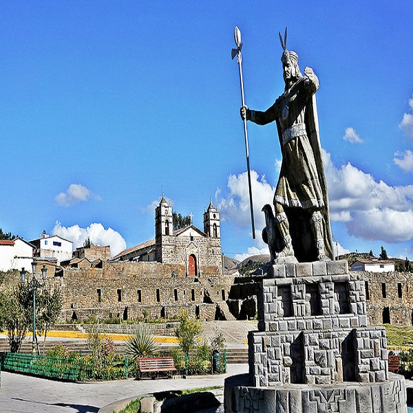
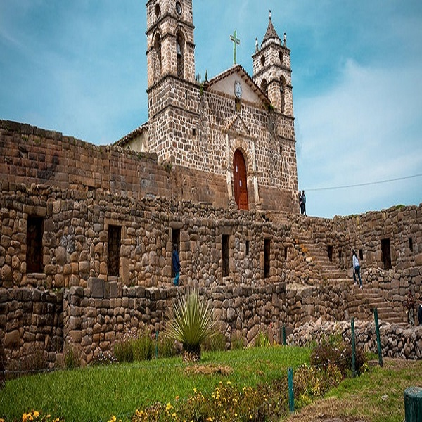
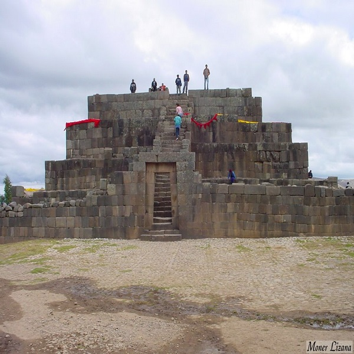

TENEMOS LA PLAZA
Según cuenta la historia de Perú, el inca Pachacútec mandó construir esta edificación tras vencer a los chancas y así demostrar el poderío de todo su imperio. Así, Vilcashuamán servía como un punto principal en la ruta del Qapaq Ñan (Camino Inca) y también como un templo de culto al sol y un lugar desde el que expandir el idioma quechua a todo el Tahuantinsuyo.,

LA IGLECIA
En la parte sur de la Plaza Trapezoidal se encuentra la que seguramente es la construcción más importante de todo el complejo arqueológico de Vilcashuamán. Se trata del Templo del Sol, un lugar dedicado al dios poderoso de los incas, el Inti. Junto a él se encuentran otros lugares de interés como el Templo de la Luna.,

EL USHNO
En menos de 100 años, los incas se hicieron con un vasto imperio en el que dejaron regadas, a lo largo y ancho de todo el Perú, bellísimas obras arquitectónicas que tenemos la suerte de poder explorar hasta el día de hoy. Uno de estos lugares es Vilcashuamán, ,